Chapter 4 Case Studies
Let’s look at some specific examples:
4.1 Family members
My father and I live in different parts of the country: he’s in the Midwest (where I grew up) and I’m on the West Coast. We’re both healthy omnivores and, other than a couple-decade age difference we both eat roughly similar foods and have similar medical histories.
That said, I was surprised to see our gut biomes were so similar. Here’s how I did the comparison.
Remember that a gut microbiome varies a lot day-to-day, depending on whatever food we happened to eat, exposure to illness, geographic location, even time of year. To keep the variables as constant as possible, I’ll compare two samples taken on the same day:
| Dad % | Me % | |
|---|---|---|
| Firmicutes | 53.82 | 46.44 |
| Bacteroidetes | 19.80 | 37.50 |
| Verrucomicrobia | 16.80 | 2.44 |
| Actinobacteria | 6.65 | 0.91 |
| Euryarchaeota | 4.78 | 0.02 |
| Proteobacteria | 1.79 | 12.43 |
At the highest, phylum, level, we can see the percentage abundances look different, but not terribly different. One easy way to spot specific patterns is through a heatmap, like this one:
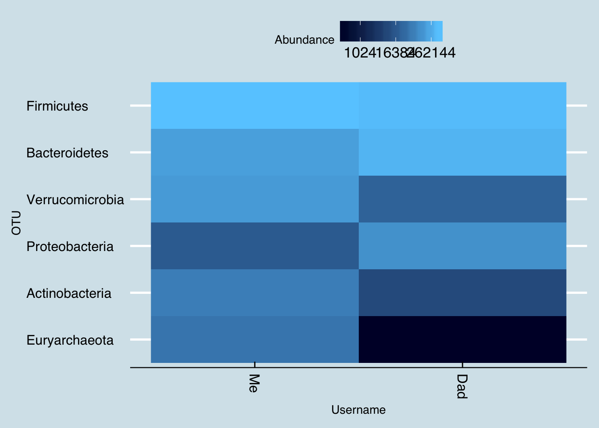
Here are some of the taxa that are unique to me:
| Me (%) | |
|---|---|
| Bifidobacterium | 5.60 |
| Methanobrevibacter | 4.69 |
| Flavonifractor | 1.13 |
| Odoribacter | 1.11 |
| Butyricimonas | 0.80 |
| Intestinibacter | 0.69 |
| Parasutterella | 0.67 |
| Terrisporobacter | 0.43 |
| Pyramidobacter | 0.42 |
| Dialister | 0.38 |
| Me Species(%) | |
|---|---|
| Methanobrevibacter smithii | 4.69 |
| Bacteroides plebeius | 2.38 |
| Odoribacter laneus | 1.04 |
| Parasutterella excrementihominis | 0.64 |
| Dialister propionicifaciens | 0.37 |
| Butyricimonas virosa | 0.29 |
| Bacteroides fragilis | 0.21 |
| Anaerotruncus sp. NML 070203 | 0.21 |
| Parabacteroides johnsonii | 0.20 |
| Bacteroides salyersiae | 0.19 |
| Turicibacter sanguinis | 0.15 |
| Streptococcus thermophilus | 0.10 |
| Collinsella sp. GD3 | 0.09 |
The list includes the familiar Bacteroides plebeius, the “seaweed-digesting” microbe which we’ve discussed previous. Dad never lived in Asia, so this is not a surprise.
and some that Dad has that I don’t:
| Dad (%) | |
|---|---|
| Thalassospira | 6.27 |
| Desulfovibrio | 2.56 |
| Sutterella | 2.35 |
| Paraprevotella | 1.30 |
| Clostridium | 0.64 |
| Dorea | 0.59 |
| Erysipelatoclostridium | 0.46 |
| Phascolarctobacterium | 0.42 |
| Butyrivibrio | 0.39 |
| Peptococcus | 0.35 |
| Dad Species (%) | |
|---|---|
| Desulfovibrio piger | 2.50 |
| Akkermansia muciniphila | 2.17 |
| Bacteroides acidifaciens | 1.52 |
| Sutterella stercoricanis | 1.50 |
| Alistipes putredinis | 0.92 |
| Sutterella wadsworthensis | 0.65 |
| Phascolarctobacterium sp. 377 | 0.34 |
| Odoribacter splanchnicus | 0.23 |
| Paraprevotella clara | 0.21 |
| Bacteroides clarus | 0.18 |
| Prevotella buccalis | 0.11 |
| Bacteroides uniformis | 0.10 |
| Corynebacterium canis | 0.09 |
That Thalassospira is a mystery. A quick literature search reveals nothing, but it’s abundant enough to make me wonder if there’s something special about Dad’s lifestyle that would harbor it. Note that it’s not visible on the species level, an indicator that nothing is known below the genus.
I tried to esimate, roughly, how common it is among the other samples I’ve seen: It ranges between zero and 10.1979
The vast majority of samples have none, but it’s not unknown either: 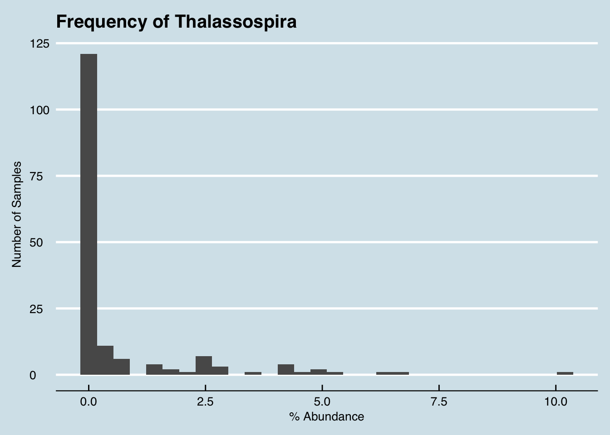
Since Dad has already submitted several samples, I can also check whether and how much he has in his other samples:
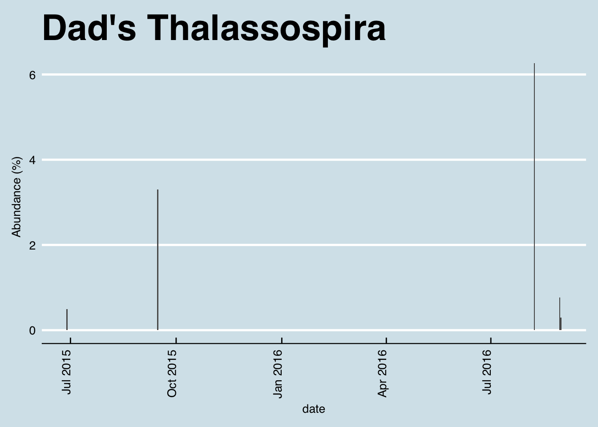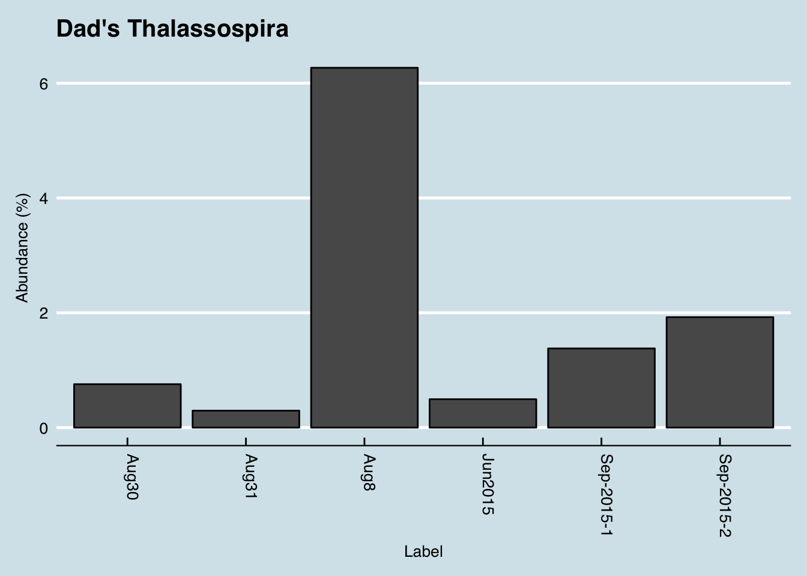 The answer is that he has some in all of his gut samples. This particular one was unusually high, but without more data it’s hard to tell if that’s significant.
4.2 My sister
Now let’s compare myself with my sister. She made two samples (A and B), but the first thing we note is how different they are from each other. Despite being taken a month apart, they look significantly different.
| A | B | |
|---|---|---|
| Firmicutes | 39.74 | 60.61 |
| Bacteroidetes | 30.89 | 34.30 |
| Actinobacteria | 17.12 | 2.41 |
| Verrucomicrobia | 9.82 | 0.17 |
| Synergistetes | 1.24 | 0.40 |
| Proteobacteria | 0.90 | 2.08 |
Sample A is the oddball, with unusually low Firmicutes than Sample B, and different from both me and our father, despite eating roughly the same diet. Can we try to undersand what’s driving the difference? Let’s look at the genus level:
| A | B | |
|---|---|---|
| Bacteroides | 10.27 | 16.29 |
| Porphyromonas | 9.91 | 0.00 |
| Akkermansia | 9.82 | 0.17 |
| Anaerococcus | 8.81 | 0.00 |
| Varibaculum | 7.73 | 0.01 |
| Corynebacterium | 6.11 | 0.00 |
| Peptoniphilus | 5.96 | 0.00 |
| Blautia | 1.85 | 8.43 |
| Faecalibacterium | 0.67 | 21.13 |
| Roseburia | 0.19 | 13.53 |
Aha! the Porphyromonas is the giveaway. That taxa almost never appears in a gut sample. In fact, of the hundreds of samples I’ve studied, it was nearly zero in all but the gut samples. I think we can safely assume that my sister’s sample A was contaminated somehow.
Finally, let’s make one big comparison among all my family members
| Me | Dad | Sister | Daughter | |
|---|---|---|---|---|
| Akkermansia | 16.74 | 2.35 | 0.17 | 0.88 |
| Faecalibacterium | 12.81 | 16.84 | 21.13 | 32.95 |
| Bacteroides | 11.82 | 17.89 | 16.29 | 22.70 |
| Sarcina | 7.72 | 2.03 | 0.30 | 1.57 |
| Blautia | 6.39 | 3.26 | 8.43 | 8.40 |
| Bifidobacterium | 5.60 | 0.03 | 1.37 | 4.21 |
| Roseburia | 3.93 | 6.73 | 13.53 | 9.80 |
| Subdoligranulum | 3.26 | 1.26 | 2.51 | 4.12 |
| Barnesiella | 1.91 | 3.82 | 0.90 | 0.04 |
| Alistipes | 1.75 | 1.85 | 2.42 | 2.54 |
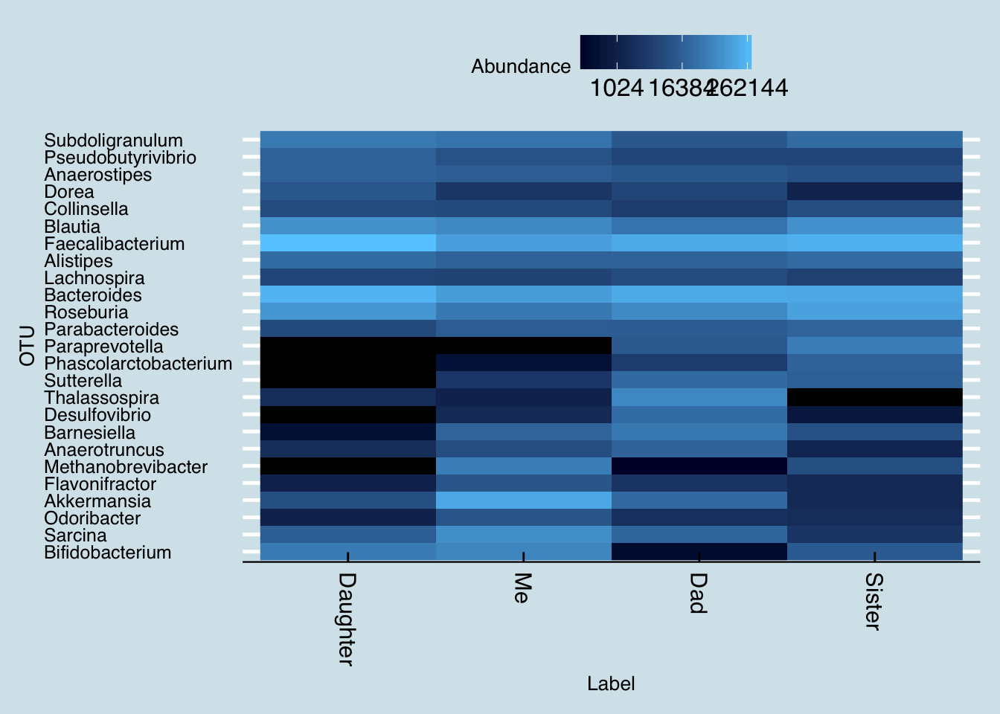
4.3 Families
4.4 Mother and Daughter
Here’s another example, this one from a friend who tested both herself and her mother.
Here’s what’s in the daughter, but not the mother: 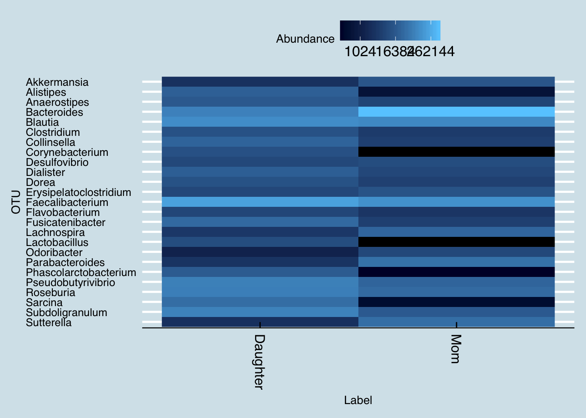
## 2017-05-09
## Sarcina 3.3790
## Alistipes 2.1002
## Phascolarctobacterium 1.8015
## Corynebacterium 1.1668
## Lactobacillus 1.0081
## Asaccharospora 0.6627
## Methanobrevibacter 0.5880
## Marvinbryantia 0.5787
## Barnesiella 0.4200and the genus found in the mother but not the daughter
## 2017-07-02
## Parabacteroides 3.9912
## Sutterella 3.5233
## Lachnospira 2.6023
## Akkermansia 1.4364
## Odoribacter 0.8442
## Moryella 0.1754
## Intestinimonas 0.1754
## Haemophilus 0.1535
## Intestinibacter 0.1498Here are species in the daughter but not the mom:
## 2017-05-09
## Fusicatenibacter saccharivorans 2.7536
## Dialister propionicifaciens 2.0255
## Phascolarctobacterium sp. 377 1.7548
## Collinsella aerofaciens 1.3908
## Alistipes putredinis 1.2041
## Blautia luti 1.1668
## Lactobacillus ruminis 0.6814
## Asaccharospora irregularis 0.6627
## Methanobrevibacter smithii 0.5880
## Corynebacterium canis 0.4387
## Barnesiella intestinihominis 0.4200
## Bacteroides caccae 0.4013
## Bacteroides sp. XB44A 0.3827
## Atopobium vaginae 0.3640and vice versa:
## 2017-07-02
## Bacteroides plebeius 8.2675
## Bacteroides sp. AR20 4.6600
## Sutterella stercoricanis 3.4649
## Parabacteroides johnsonii 3.3552
## Bacteroides finegoldii 3.0372
## Bacteroides eggerthii 1.4875
## Bacteroides salyersiae 1.1513
## Roseburia intestinalis 1.0380
## Odoribacter splanchnicus 0.8442
## Dialister invisus 0.8150
## Roseburia inulinivorans 0.7675
## Parabacteroides sp. 157 0.5957
## Blautia sp. YHC-4 0.5482
## Bacteroides acidifaciens 0.2412As a bonus, we also have data from the brother, who has been living in Eastern Europe for several years:
## 2017-06-13 2017-05-09 2017-07-08 2017-07-02
## Faecalibacterium 11.4514 18.5375 1.2676 10.0732
## Blautia 10.4976 9.8873 7.1828 7.9630
## Bacteroides 5.9057 6.7705 27.6384 43.3327
## Roseburia 5.2305 6.2380 2.7817 2.8843
## Pseudobutyrivibrio 4.6562 6.4532 1.4770 2.3077
## Subdoligranulum 4.2012 6.8360 0.1552 1.5076
## Sarcina 3.7306 3.2876 0.9258 0.0329
## Collinsella 3.5943 2.4070 2.2834 0.5000
## Lactobacillus 2.8435 0.9972 0.0000 0.0000
## Anaerostipes 2.4918 1.6064 0.7214 0.6457
## Phascolarctobacterium 2.4270 1.7470 0.0051 0.0197
## Alistipes 2.2073 2.0332 2.4210 0.0465
## Peptoniphilus 2.0028 0.2277 0.4626 0.0732
## Dorea 1.8664 1.1973 0.5097 0.5498
## Corynebacterium 1.6888 1.1631 0.9160 0.0000
## Dialister 1.5673 1.9846 0.8657 0.7223
## Clostridium 1.4905 1.1812 0.3463 0.4204
## Fusicatenibacter 1.4894 2.9315 1.1902 0.5176
## Parabacteroides 0.6061 0.3342 2.7320 3.5621
## Erysipelatoclostridium 0.5966 0.7910 0.3839 1.1440
## Bifidobacterium 0.4996 0.3387 8.0282 0.1105
## Sutterella 0.1270 0.2805 0.0593 3.1363
## Anaerotruncus 0.0895 0.5621 2.1533 0.3492
## Lachnospira 0.0417 0.3887 0.2049 2.3295
## Megamonas 0.0000 0.0000 14.4416 0.0000| sister-jun13 | sister-may9 | brother | mother | |
|---|---|---|---|---|
| Firmicutes | 71.7670 | 79.5429 | 45.2227 | 38.1308 |
| Bacteroidetes | 15.5276 | 12.0909 | 37.9537 | 54.6959 |
| Actinobacteria | 9.3914 | 6.1513 | 12.4054 | 0.8348 |
| Proteobacteria | 2.8742 | 1.3495 | 3.4236 | 4.8772 |
| Euryarchaeota | 0.1932 | 0.5768 | 0.2278 | 0.0072 |
| Chloroflexi | 0.1449 | 0.0000 | 0.0091 | 0.0000 |
| Tenericutes | 0.0646 | 0.0000 | 0.0000 | 0.0000 |
| Verrucomicrobia | 0.0441 | 0.2956 | 0.6286 | 1.4508 |
| Fibrobacteres | 0.0000 | 0.0000 | 0.0000 | 0.0103 |
| Lentisphaerae | 0.0000 | 0.0000 | 0.1361 | 0.0000 |
| sister-jun13 | sister-may9 | brother | mother | |
|---|---|---|---|---|
| Faecalibacterium | 11.5185 | 19.1169 | 1.3384 | 11.2755 |
| Blautia | 10.4616 | 10.1652 | 7.7494 | 8.9144 |
| Bacteroides | 5.8886 | 6.9821 | 29.5068 | 48.6695 |
| Roseburia | 5.2415 | 6.4127 | 2.9666 | 3.2200 |
| Pseudobutyrivibrio | 4.6807 | 6.5714 | 1.5729 | 2.5804 |
| Subdoligranulum | 4.1630 | 7.0288 | 0.1637 | 1.7141 |
| Sarcina | 3.7100 | 3.3790 | 0.9999 | 0.0365 |
| Collinsella | 3.6022 | 2.4922 | 2.4356 | 0.5738 |
| Lactobacillus | 2.8472 | 1.0081 | 0.0000 | 0.0000 |
| Anaerostipes | 2.4805 | 1.6428 | 0.7720 | 0.7200 |
| Phascolarctobacterium | 2.4374 | 1.8015 | 0.0044 | 0.0219 |
| Alistipes | 2.2001 | 2.1002 | 2.6126 | 0.0548 |
| Peptoniphilus | 2.0060 | 0.2426 | 0.4955 | 0.0804 |
| Dorea | 1.8766 | 1.2228 | 0.5375 | 0.6030 |
| Corynebacterium | 1.6824 | 1.1668 | 0.9910 | 0.0000 |
| Dialister | 1.5746 | 2.0255 | 0.9225 | 0.8150 |
| Clostridium | 1.5099 | 1.2134 | 0.3694 | 0.4751 |
| Fusicatenibacter | 1.4883 | 3.0243 | 1.2831 | 0.5774 |
| Parabacteroides | 0.6039 | 0.3360 | 2.9245 | 3.9912 |
| Erysipelatoclostridium | 0.6039 | 0.8027 | 0.4136 | 1.2682 |
| Bifidobacterium | 0.4961 | 0.3453 | 8.6056 | 0.1279 |
| Sutterella | 0.1294 | 0.2893 | 0.0619 | 3.5233 |
| Anaerotruncus | 0.0862 | 0.5694 | 2.3117 | 0.3910 |
| Lachnospira | 0.0431 | 0.4013 | 0.2234 | 2.6023 |
| Megamonas | 0.0000 | 0.0000 | 15.4436 | 0.0000 |
| ub3-May16 | ub3-Jun16 | Brother | |
|---|---|---|---|
| Anaerostipes | 31.5160 | 0.9779 | 0.7720 |
| Bacteroides | 12.8444 | 12.5050 | 29.5068 |
| Blautia | 10.4921 | 27.8993 | 7.7494 |
| Kluyvera | 7.0553 | 0.0000 | 0.3163 |
| Prevotella | 6.8966 | 0.0143 | 0.0619 |
| Finegoldia | 3.5938 | 0.0000 | 0.4999 |
| Peptoniphilus | 2.4779 | 0.0000 | 0.4955 |
| Peptostreptococcus | 2.3358 | 0.0000 | 0.0000 |
| Megasphaera | 2.2349 | 1.1800 | 0.0000 |
| Porphyromonas | 1.5770 | 0.0000 | 0.5198 |
| Parabacteroides | 1.5010 | 1.4410 | 2.9245 |
| Megamonas | 0.7323 | 7.4820 | 15.4436 |
| Faecalibacterium | 0.3206 | 5.0229 | 1.3384 |
| Anaerotruncus | 0.2760 | 0.8804 | 2.3117 |
| Roseburia | 0.2314 | 0.9951 | 2.9666 |
| Pseudobutyrivibrio | 0.2082 | 1.4597 | 1.5729 |
| Collinsella | 0.1719 | 1.1714 | 2.4356 |
| Alistipes | 0.1206 | 0.8947 | 2.6126 |
| Bifidobacterium | 0.1190 | 7.0246 | 8.6056 |
| Thalassospira | 0.0694 | 0.5635 | 2.3715 |
| Sarcina | 0.0628 | 2.0619 | 0.9999 |
| Barnesiella | 0.0578 | 2.2741 | 0.2654 |
| Sutterella | 0.0462 | 2.2125 | 0.0619 |
| Akkermansia | 0.0281 | 3.7826 | 0.6127 |
| Subdoligranulum | 0.0148 | 7.7373 | 0.1637 |
| ub3-May16 | ub3-Jun16 | Brother | |
|---|---|---|---|
| Bacteroides vulgatus | 8.9630 | 6.6790 | 11.4372 |
| Prevotella bivia | 3.3772 | 0.0000 | 0.0132 |
| Bacteroides fragilis | 2.9705 | 0.0086 | 0.0000 |
| Prevotella disiens | 2.7507 | 0.0000 | 0.0000 |
| Peptostreptococcus anaerobius | 1.6332 | 0.0000 | 0.0000 |
| Parabacteroides merdae | 1.0695 | 1.2991 | 0.9313 |
| Megamonas funiformis | 0.7323 | 7.2928 | 15.3618 |
| Parabacteroides distasonis | 0.4314 | 0.1419 | 1.9932 |
| Megasphaera elsdenii | 0.3273 | 1.1585 | 0.0000 |
| Bacteroides caccae | 0.2149 | 0.1648 | 1.7897 |
| Collinsella aerofaciens | 0.1636 | 0.0573 | 1.6392 |
| Blautia luti | 0.1173 | 8.6005 | 1.2808 |
| Barnesiella intestinihominis | 0.0578 | 2.0676 | 0.2654 |
| Sutterella wadsworthensis | 0.0462 | 1.9959 | 0.0464 |
| Bacteroides acidifaciens | 0.0413 | 0.1089 | 1.6083 |
| Alistipes putredinis | 0.0281 | 0.2236 | 1.3229 |
| Akkermansia muciniphila | 0.0281 | 3.4958 | 0.6083 |
| Faecalibacterium prausnitzii | 0.0165 | 1.5285 | 0.9379 |
| Bifidobacterium longum | 0.0132 | 0.4516 | 2.3715 |
| Blautia faecis | 0.0115 | 0.5448 | 0.9269 |
| Subdoligranulum variabile | 0.0066 | 5.5534 | 0.0442 |
| Bacteroides finegoldii | 0.0000 | 0.1046 | 1.3693 |
| Bacteroides uniformis | 0.0000 | 0.1419 | 11.7934 |
| Blautia wexlerae | 0.0000 | 0.0000 | 2.7564 |
| Bifidobacterium kashiwanohense | 0.0000 | 0.0000 | 6.1854 |
The brother has tons of Megamonas.
## 2016-06-10
## Subdoligranulum variabile 5.5534
## Barnesiella intestinihominis 2.0676
## Sutterella wadsworthensis 1.9959
## Bifidobacterium bifidum 1.3665
## Megasphaera elsdenii 1.1585
## Bacteroides eggerthii 0.8875
## Bacteroides salyersiae 0.8445
## Phascolarctobacterium faecium 0.8201
## Blautia sp. YHC-4 0.4588
## Dorea formicigenerans 0.3226
## Flavonifractor plautii 0.2394
## Catenibacterium mitsuokai 0.11474.5 A baby microbiome
Molly is a healthy infant whose first-time parents are interested in the microbiome and have tried to do everything they can to optimize their baby’s microbial health. Molly was born vaginally, has never had antibiotics, is exclusively breast-fed by a mother who tries to eat nutritious, organic food. They live in the country, surrounded by nature, including pets and other animals that will become more of her life when she starts to move around.
But how can you tell whether their healthy lifestyle is helping? To find out, her parents tested Molly on her one-month birthday. As any parent on diaper duty knows, collecting the, um, sample is pretty easy. They mailed a tiny swab to the lab and a few weeks later they received this list of the kinds of bacteria found along with a breakdown of their percentage abundances:
| Phylum (Baby) | |
|---|---|
| Bacteroidetes | 84.59% |
| Actinobacteria | 9.18% |
| Proteobacteria | 3.97% |
| Firmicutes | 2.26% |

What does this all mean? Well, the first thing to notice about Molly’s microbiome is the dominance of a group of bacteria called Bacteroidetes, and the much lower levels of another type called Firmicutes. In most westerners, the abundance of these two is exactly reversed, as you can see in a similar breakdown we have of Molly’s mom:
| Phylum (Mom) | |
|---|---|
| Firmicutes | 50.40% |
| Bacteroidetes | 23.04% |
| Verrucomicrobia | 8.66% |
| Actinobacteria | 7.78% |
| Proteobacteria | 1.59% |
| Nitrospirae | 0.02% |

Figure 2: Mom’s microbiome
The bacterial kingdom is extremely old and diverse, much more so than the other types of living things around us. The categories Firmicutes and Bacteroidetes are therefore very broad, a bit like discussing “vertebrates” and lumping in everything from fish to people as one kind of life. Even at this high level, they have some distinctive features – Firmicutes tends to eat fats, whereas Bacteroidetes likes sugars – but to understand the difference between Molly and her mother, let’s dig more deeply into exactly the types of Firmicutes we see.
In adults like Molly’s Mom, we generally find that more than 99% of Firmicutes come from a group of inter-related bacteria called Clostridiales. But not Molly’s. Hers is almost entirely a single species, Phascolarctobacterium faecium. What does it do? Without comparing her to other babies, we don’t really know. How little we understand is just one of the frustrating recurring themes as we study the microbiome.
The next big bunch in Molly’s gut is Actinobacteria, of which nearly all is a well-studied species called Bifidobacterium longum. This one is so closely associated with good health that many supplement makers sell it as a prebiotic pill, and Molly has enough to fill a factory: it makes up more than 8% of her entire sample, nearly 100 times more than her mother.
Bifidobacteria like milk, and Molly’s are fortunate that she is breastfed. One clue about the importance of breast milk to baby microbes is human milk oligosaccharide (HMO), which despite being the most abundant component of milk, after fat and lactose46, has a chemical structure too complex for the baby to digest! Some early designers of infant formula assumed Nature had made a mistake and tried somewhat arrogantly to market their wares as “scientifically” better because it was simple enough for a baby. But HMOs aren’t there to feed the baby; they nourish the abundant microbes in the infant gut, mostly the Bifidobacteria, and later the Bacteroides that will play a role when it comes time for the baby to begin eating solid foods. At that point, Molly’s microbiota will undergo a big transformation until, by three years old, her gut will look like an adult’s.
Bifidobacteria infantis digests HMOs, releasing SFCAs that feed critical immune cells in a baby’s gut. HMOs also fend off pathogens, preventing them from sticking to the mucosal surface.
Incidentally, HMOs are notoriously difficult to make artificially. Formula makers do their best to imitate with other oligosaccharides, like those found in chicory or yeast, but it’s not quite the same.
Turning to the other big phyla, Bacteroidetes, we see here too Molly’s is almost exclusively one species: Bacteroides fragilis, of which her mom (but not her dad) has a tiny bit as well. That makes sense because this particular bacterium is a well-known early infant colonizer, transmitted from mother to child. Some Norwegian scientists, surveying the research, noted its well-known immune system modulating properties:
B. fragilis are higher in children with high specific IgE (sIgE). IgE plays a central role in asthma and allergy. Other studies have shown a correlation of B. fragilis with asthma and pollen allergy.47
Now that doesn’t mean Molly herself is predisposed to any of these conditions – in fact, it may mean the exact opposite depending on the amounts or the presence or absence of other species. Again, without studying a lot more babies, we just don’t know.
Interestingly, when I looked closely at the broadest levels of bacteria, I couldn’t find a single phylum of microbes that was present in Molly but not in her parents, while I found plenty of examples of the opposite. I guess that’s one more way Molly is dependent on her mommy. Bottle-fed babies, by the way, tend to have more diversity; though my guess is those extra bacteria aren’t all good.
One microbe that doesn’t appear in Molly’s sample is Lactobacillus, which is often missing in collicky babies48. Fortunately, Molly seems completely normal for now but this is something to watch for in future tests. There may be an easy fix anyway: get her a sibling. Babies who grow up in homes with other small children tend to have better microbiomes.49
Thanks to the surging interest in gut health, many parents are taking steps to ensure their babies have the best possible microbiome, but until the recent development of low-cost test kits, it was difficult to tell how well it was working. Now Molly’s parents have a new tool, and if you’re changing diapers regularly anyway, why not test your own baby too and share your results with others so that we can all learn more and contribute to the scientific understanding of the baby biome.
Here are a few other babies to compare.

| BabyApr13 | BabyApr15 | BabyMay8 | BabyJun10-NoProbiotics | BabyJun11-Probiotics | BabyJul16-constipated | BabyJul19-prunes | baby | |
|---|---|---|---|---|---|---|---|---|
| Bifidobacterium | 53.0557 | 44.9303 | 52.6629 | 26.7411 | 33.3351 | 18.8529 | 17.6191 | 0.0000 |
| Bacteroides | 23.0119 | 21.8573 | 17.9728 | 37.6064 | 28.8691 | 28.7910 | 34.4767 | 0.0000 |
| Collinsella | 7.5204 | 10.7308 | 0.0918 | 2.1358 | 5.3497 | 9.7147 | 8.1426 | 0.0000 |
| Parabacteroides | 7.5204 | 8.8837 | 4.3473 | 12.8638 | 11.4518 | 5.5493 | 5.3111 | 0.0000 |
| Kluyvera | 3.5984 | 2.4640 | 18.4147 | 10.8642 | 6.7751 | 7.2876 | 8.1376 | 0.0000 |
| Lactobacillus | 1.3010 | 3.6942 | 0.0262 | 2.0672 | 3.7367 | 0.9271 | 0.5761 | 0.5139 |
| Intestinibacter | 0.4696 | 2.0830 | 0.2260 | 0.0000 | 0.0066 | 0.4392 | 1.0526 | 34.7927 |
| Veillonella | 0.0190 | 0.0217 | 0.0087 | 0.2691 | 0.6829 | 2.1475 | 3.3659 | 12.0324 |
| Blautia | 0.0000 | 0.0000 | 0.0000 | 0.0904 | 0.3331 | 8.3108 | 7.5287 | 0.0000 |
| Raoultella | 0.0000 | 0.0000 | 0.0000 | 0.0000 | 0.0000 | 0.0000 | 0.0000 | 28.4627 |
4.6 Alzheimers and the microbiome
“Anne” is a 40-year-old mother with a secret: her 23andme genetic test results show she is homozygous for the APOE-4 variant, which in slightly-misleading-but-you-know-what-I-mean everyday language means she has the gene for Alzheimer’s disease. Statistics show that about 80% of people like her will develop the condition, and with this particular gene variant, it’s likely she may start to see early symptoms as soon as age 50. Scary! No wonder she doesn’t want anyone to know, including her children and relatives.
But Anne is also an optimist: she prefers to see herself as one of the 20% with the gene who won’t develop any symptoms. And she’s ready and motivated to do whatever necessary — diet, exercise, lifestyle changes — to beat this thing. She also knows that her body includes much more than human DNA, that for every human gene like that APOE-4 variant, she is host to as many as ten or a hundred times as many microbial genes, including — perhaps — some that with a bit of nurturing might help offset or prevent whatever propensity her human DNA has to this terrible disease.
Scientists researching Alzheimer’s disease have uncovered some intriguing relationships with the microbiome. (see this recent New York Times article for a summary.) Some early AD symptoms, like a loss of smell, may be clues that the brain has been attacked by something that came from outside. The microbiome of the mouth, especially, is an excellent hiding place for low-grade infectious agents thanks to its many dark corners with regular access to both the inside and outside of the body. After reading about these relationships, Anne recently submitted an oral sample to uBiome and shared the results with me.
Important caveat before we go further: uBiome kit results are intended for scientific research only. The science of the microbiome is too new to make definitive healthcare-related decisions, and uBiome kits have not been evaluated or approved by regulators. If you are sick, or you need medical guidance, always see a doctor. I am not a doctor!
The AD research field has blossomed lately with the realization that the brain, once thought to be completely sterile, is home to many microbes. This discovery and additional research has excited the editors of the respected Journal of Alzheimers Disease, who concluded a recent issue (2016):
We propose that infectious agents, including HSV1, Chlamydia pneumonia, and spirochetes, reach the CNS (Central Nervous System) and remain there in latent form. These agents can undergo reactivation in the brain during aging, as the immune system declines…The consequent neuronal damage… occurs recurrently, leading to (or acting as a cofactor for) progressive synaptic dysfunction, neuronal loss, and ultimately Alzheimers Disease.
That’s a powerful indictment of specific microbes, and the article calls them out by name. So does Anne have any in her uBiome sample?
Unfortunately, here’s where we see both the promise and the limitations of uBiome and others who suspect the microbiome will play an important role in eventually conquering this terrible disease.
The promise is intriguing: if we could identify the specific microbes underlying the condition, and then, perhaps through antibiotics or probiotics or some other intervention, what if we could get rid of the “bad” microbes and reseed with the “good” ones?
Here’s a high-level (phylum) look at Anne’s oral microbiome:
| 1 | 2 | 3 | |
|---|---|---|---|
| Firmicutes | 69.18 | 41.80 | 58.67 |
| Bacteroidetes | 14.46 | 13.41 | 5.75 |
| Verrucomicrobia | 8.23 | 0.00 | 0.00 |
| Euryarchaeota | 7.46 | 0.00 | 0.00 |
| Actinobacteria | 5.37 | 3.67 | 0.36 |
| Proteobacteria | 1.93 | 36.17 | 28.39 |
| Synergistetes | 0.12 | 0.00 | 0.00 |
| Fusobacteria | 0.01 | 4.17 | 1.07 |
| Spirochaetes | 0.00 | 0.01 | 0.02 |
| Candidatus Saccharibacteria | 0.00 | 0.08 | 5.03 |
Careful readers will immediately notice the Spirochaetes in those two later samples – the same name identified as a suspect in the Journal of Alzheimer’s Research. Is this just a coincidence?! Or have we found a link?
At this point, (big groan), we know there are quick-buck charlatans out there who will seize on an observation like this to sell hope to Alzheimer’s sufferers and their families: how about a new anti-Spirochetes supplement? A seven-step “detox” plan to permanently rid your system of Spirochetes? Great idea for a new business, or maybe a best-selling book, right?
At uBiome, we’re very serious about science, and part of our mission is to promote citizen science because we believe in the power of normal people like Anne to participate and drive the discoveries that will revolutionize medicine of the future. We’re excited about those possibilities, but unfortunately there are no shortcuts, and real conclusions from this data are still a ways away.
It turns out that Spirochaetes is actually quite common in the oral microbiome. It’s a broad category of free-moving bacteria that like to hide in low-oxygen environments. Its most infamous members include the genus Troponema, associated with syphilis, which come to think of it is a disease that affects the brain. (In botany class they like to joke that it’s called spirochete because that’s what you get when you cheat).
The Spirochaetes in Anne’s test results are not Troponema, but even if they were it wouldn’t mean much. A lot of people have these. I have some in my own mouth microbiome. The ecology of the mouth is so rich and complex that it’s almost never possible to identify something as either “bad” or “good”. Remember the example from earlier of “viridans” streptococci, the ones that beat back Strep Throat but can also cause heart problems?
The same is likely to be true about whatever microbes might be involved with Alzheimer’s. But the good news is that more sampling can play a role in helping to narrow down the microbes that are different in people who go on to develop the disease. If we can collect enough samples from people like Anne, who have a family history and are at high risk for AD, we can compare them to one another as well as to thousands of samples of people who are normal risk and maybe we’ll see a pattern.
For example, when Anne compared her mouth biome results with those from a close relative, she found that she has these unique phyla. The relative does not have them:
| Anne’s Unique Phyla | % diff |
|---|---|
| Candidatus Saccharibacteria | 0.08% |
| Spirochaetes | 0.01% |
| Tenericutes | 0.00% |
Interestingly, this relative has none of her Spirochaetes. And we find two others missing as well. Do they matter? Who knows?
The microbiome studies that have been conducted so far on AD patients are too limited to offer suggestions for what Anne can do right now, but slight differences like this offer her some ideas for possible experiments in the meantime.
Anne already follows the general advice that doctors give to everyone, including those at risk of AD, who wants a healthy microbiome: get plenty of exercise and sleep, eat healthy unprocessed foods, and avoid antibiotics. But, just possibly, there are variations on these general good habits that might help her today.
For example, she’s experimenting with different toothpastes to see how that affects her mouth microbiome. Did you know that most of the common toothpaste brands include powerful antibiotics? Could the difference in brand be responsible for the unique phyla she sees? To learn more about herself, she’s experimenting with alternate brands – testing her oral microbiome before and after to see the effects.
This is not the end of the story. Sadly we don’t know what will ultimately happen to Anne. But through better knowledge of herself, and her microbiome, she’s doing everything she can to beat the odds.
4.7 Compare to other AD patients
## Square root transformation
## Wisconsin double standardization
## Run 0 stress 0.1168141
## Run 1 stress 0.1168671
## ... Procrustes: rmse 0.001964555 max resid 0.01021723
## Run 2 stress 0.1168671
## ... Procrustes: rmse 0.001960939 max resid 0.01021293
## Run 3 stress 0.1177565
## Run 4 stress 0.1177975
## Run 5 stress 0.1177565
## Run 6 stress 0.1661813
## Run 7 stress 0.1170417
## ... Procrustes: rmse 0.006346724 max resid 0.03014312
## Run 8 stress 0.1813601
## Run 9 stress 0.1168141
## ... New best solution
## ... Procrustes: rmse 0.00002121325 max resid 0.00009443298
## ... Similar to previous best
## Run 10 stress 0.1177976
## Run 11 stress 0.1168695
## ... Procrustes: rmse 0.002103061 max resid 0.01026963
## Run 12 stress 0.1168671
## ... Procrustes: rmse 0.001966796 max resid 0.01021779
## Run 13 stress 0.1652026
## Run 14 stress 0.1168146
## ... Procrustes: rmse 0.0001394445 max resid 0.0006039994
## ... Similar to previous best
## Run 15 stress 0.1576384
## Run 16 stress 0.1168689
## ... Procrustes: rmse 0.002047174 max resid 0.01024598
## Run 17 stress 0.1168141
## ... Procrustes: rmse 0.000009150248 max resid 0.00002791518
## ... Similar to previous best
## Run 18 stress 0.158409
## Run 19 stress 0.1168141
## ... New best solution
## ... Procrustes: rmse 0.000003508334 max resid 0.00001227592
## ... Similar to previous best
## Run 20 stress 0.1177565
## *** Solution reached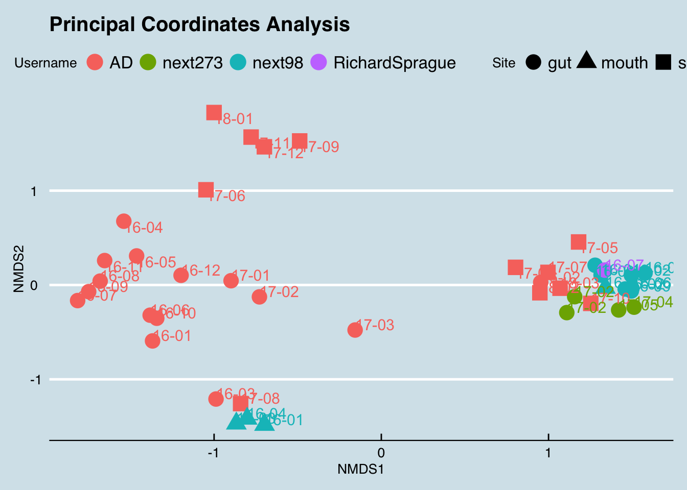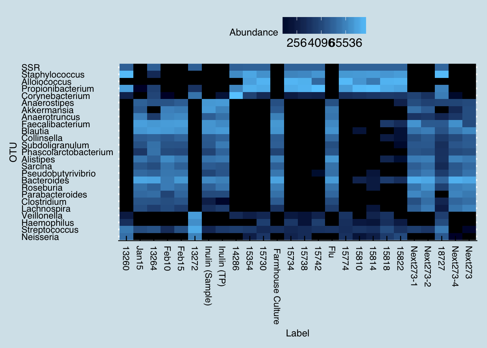
Here are some more references:
Shoemark, D. K., & Allen, S. J. (2015). The microbiome and disease: Reviewing the links between the oral microbiome, aging, and Alzheimer’s disease. Journal of Alzheimer’s Disease. IOS Press.
Itzhaki, R. F., Lathe, R., Balin, B. J., Ball, M. J., Bearer, E. L., Braak, H., … Whittum-Hudson, J. A. (2016). Microbes and Alzheimer’s Disease. Journal of Alzheimer’s Disease : JAD, Preprint(Preprint), 1–6. http://doi.org/10.3233/JAD-160152
Pischel, L. (2014). Triclosan, triclocarban, metabolism and microbiome: a randomized, cross-over study. In IDWeek 2014. Idsa. Retrieved from https://idsa.confex.com/idsa/2014/webprogram/Paper44519.html
By the way, I randomized these and all my other numbers slightly to make extra-sure that nobody can identify her. Anne gave me permission to write this post because she wants to encourage more people to submit the data scientists need for finding a cure, but I’ve changed her name and all the other specifics for privacy reasons.
4.8 Colorectal Cancer
Paul was a pretty normal 50-something year old father of two teenagers when he noticed some odd things in the bathroom. At first he thought it was something he’d been eating; despite a lifetime of Southern living, he didn’t have as much tolerance for deep-fried cooking as some of his neighbors and the past few weeks had been unusually heavy on the grease. So, he laid off the french fries for a few weeks and it seemed to get better. He had enjoyed a lifetime of perfect health: he was rarely sick, had never been inside a hospital except to visit others, and fully expected to live well into his 80s or 90s like his grandparents.
He wasn’t worried, but a few months later his wife reminded him that his company insurance plan includes a free annual physical, and he thought why not. The doctor didn’t seem worried either, but suggested a few more tests “just in case”, and unfortunately that’s when he got the diagnosis that has been on his mind every day since: Stage IV colorectal cancer that has spread to his liver.
Many cancers seem to have a relationship with the microbiome, and there are at least ten viruses which are known to be carcinogenic, including Human papillomavirus (HPV), that causes cervical cancer, and for which there is a vaccine. Some scientists guess that most cancers will eventually be shown to have their origins in a microbe, and although that’s mostly speculation at this point, the idea of using microbes to treat or prevent cancer has attracted interest for more than 100 years.
Fusobacterium nucleatum, Bacteroides fragilis, and many members of the large class of Enterobaceriaceae have well-studied characteristics that make them liable to cause the types of genetic damage that can give rise to cancer.
A friend suggested that Paul test his gut microbiome, and then asked me to take a look. Here are some of the interesting things I found.
He does not show any measured amounts of the bacteria (Fusobacterium) that have been discussed in scientific journals as associated with colon cancer.
The standard ratios (Firmicutes/Bacteroidetes) that I follow while watching other samples, are all well within the “normal” range. In other words, I don’t see anything offhand that looks odd.
His overall diversity, using uBiome’s calculations of the Shannon diversity index, is a healthy 89%.
But then I saw way, way off-the-charts high levels of a bacterium called Xanthomonadales. It makes up something like 16% of his entire gut bacteria. Of the dozens of biomes I’ve studied, I see this one from time to time, but never in such a high quantity. Other than Paul, the highest I’ve ever seen was in me, after returning from my 2-week campi’ng trip in New Mexico, where my total was 0.0056. Paul’s is 2800x that amount. Not sure what this means, but one version of that bacterium is a pathogen that lives in things like catheters; it’s usually harmless and goes away when you take out the catheter.
Another quirk is his very high levels of “alpha-Linolenic acid metabolism pathway”. I don’t know what that means either, but it relates to how well the body can metabolize things like flax seed.
It might be interesting to try taking a lot of flaxseed (e.g. 1/2 cup / day, raw, mixed with water or a smoothie) and see what happens.
It could be that those MCP pills he’s been faithfully taking have some effect on that too.
Like all concerned patients, Paul’s first stop is with his oncologist, a doctor with almost thirty years experience fighting cancer and who is very familiar with.
Unfortunately, the doctor sticks to the tried and true, not because he doesn’t understand the urgency of Paul’s situation, but because he knows that over time the only way to beat cancer is through the methodical, step-by-step approach of one trial after another. Garrett (2015)
4.9 Ketogenic Diet
What happens if you eat a very low-carb, high fat diet ?

4.10 Autism
What can we learn from the microbiome of a 4-year-old boy with Autism? A mother sent me the Explorer results of her 4-year-old, who suffers from Autistic Spectrum Disorder (ASD)
Here’s the overall picture of the phlyum-level microbes in his gut:
| ASD | |
|---|---|
| Firmicutes | 66.42 |
| Bacteroidetes | 27.68 |
| Actinobacteria | 3.00 |
| Proteobacteria | 2.89 |
| Verrucomicrobia | 0.01 |
| Fibrobacteres | 0.00 |
| Lentisphaerae | 0.00 |
| Euryarchaeota | 0.00 |
Looks quite normal, especially for somebody on an omnivore diet. Lots of Firmicutes and reasonable Actinobacteria. Proteobacteria is a smidge high, though not unusual for a single sample.
Let’s look at more details, down to the genus level, and compare him to some similarly-aged (healthy) kids:
| Girl | ASD | Boy | |
|---|---|---|---|
| Bacteroides | 46.31 | 26.84 | 37.78 |
| Blautia | 8.12 | 13.84 | 10.81 |
| Faecalibacterium | 1.56 | 13.22 | 20.23 |
| Roseburia | 3.28 | 11.38 | 1.60 |
| Anaerotruncus | 0.94 | 6.44 | 0.21 |
| Pseudobutyrivibrio | 1.57 | 3.22 | 0.30 |
| Subdoligranulum | 0.48 | 2.80 | 3.36 |
| Lachnospira | 0.44 | 2.30 | 0.10 |
| Collinsella | 0.36 | 2.10 | 0.98 |
| Anaerostipes | 1.15 | 1.91 | 4.02 |
| Sutterella | 0.07 | 1.83 | 0.00 |
| Dorea | 2.24 | 1.42 | 1.59 |
| Clostridium | 0.08 | 0.86 | 0.51 |
| Bifidobacterium | 0.61 | 0.79 | 0.00 |
| Parasutterella | 0.00 | 0.44 | 1.70 |
| Alistipes | 5.26 | 0.34 | 4.60 |
| Fusicatenibacter | 1.40 | 0.34 | 0.00 |
| Flavobacterium | 0.51 | 0.34 | 0.00 |
| Phascolarctobacterium | 2.32 | 0.29 | 0.79 |
| Flavonifractor | 2.48 | 0.11 | 0.16 |
| Thalassospira | 2.43 | 0.07 | 0.00 |
| Sarcina | 2.97 | 0.04 | 0.00 |
| Akkermansia | 2.88 | 0.01 | 0.00 |
| Barnesiella | 2.34 | 0.00 | 1.92 |
| Streptococcus | 0.01 | 0.00 | 0.54 |
Now, what about the autistic boy is unique? Let’s compare him to a similar-aged, healthy boy and see which microbes are present in the autistic case but not the healthy case:
| ASD | |
|---|---|
| Sutterella | 1.83 |
| Bifidobacterium | 0.79 |
| Haemophilus | 0.39 |
| Fusicatenibacter | 0.34 |
| Flavobacterium | 0.34 |
| Odoribacter | 0.15 |
| Asaccharospora | 0.14 |
The autistic boy has Sutterella, an organism that is missing in the healthy boy.
How unusual is that level of Sutterella? I don’t have enough samples of healthy boys to do a real comparison, but just to get a rough idea of what we’re dealing with, here’s the range over a mix of 100+ health and unhealthy samples (mostly adults). The red line indicates where the autistic boy fits on the range of Sutterella abundances:
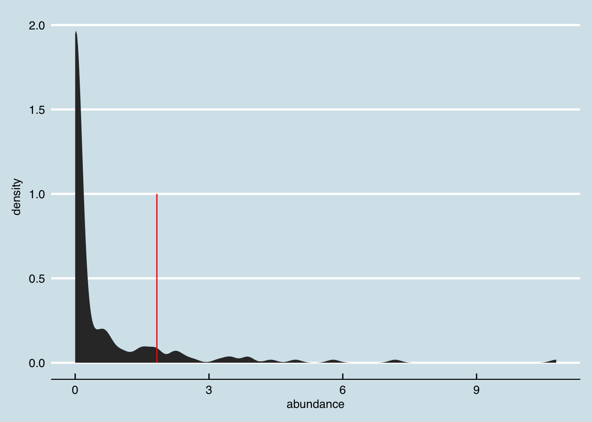
4.10.0.1 Microbes of known association with autism
Clostridium tetani may play a role in autism [ citation needed ], though unfortunately our 16S test can’t see this microbe. Instead let’s look for that microbe at the genus level:
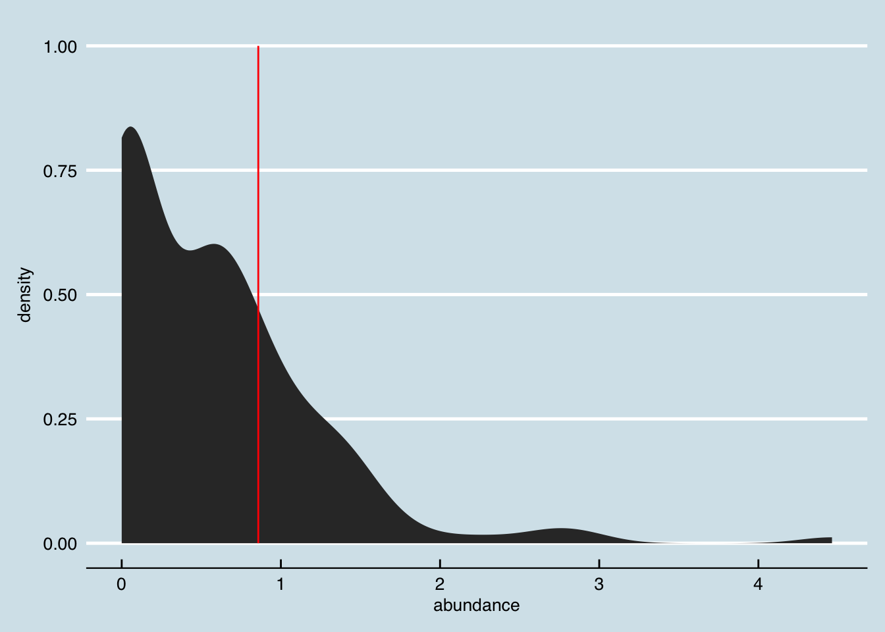
Although obviously a single test can’t say much, he is not especially unusual for this microbe, at least at the genus level.
4.11 Gut Issues
Probably the most common reason people are motivated to study their microbiome is due to their discomfort with their gut.
Here’s one example. Let’s look first at the phylum level
| 2017-06-30 | 2017-07-25 | |
|---|---|---|
| Firmicutes | 79.46 | 57.10 |
| Bacteroidetes | 13.73 | 20.24 |
| Actinobacteria | 3.94 | 13.28 |
| Proteobacteria | 1.35 | 9.39 |
| Verrucomicrobia | 1.03 | 0.00 |
| Euryarchaeota | 0.56 | 0.00 |
| Fibrobacteres | 0.44 | 0.00 |
| Lentisphaerae | 0.05 | 0.00 |
Nothing obviously different there than with others I’ve seen. How about the genus level:
| 2017-06-30 | 2017-07-25 | |
|---|---|---|
| Roseburia | 17.50 | 7.38 |
| Butyrivibrio | 8.42 | 0.00 |
| Blautia | 8.12 | 17.41 |
| Pseudobutyrivibrio | 4.97 | 3.26 |
| Faecalibacterium | 4.49 | 8.05 |
| Anaerostipes | 3.98 | 0.88 |
| Fusicatenibacter | 3.91 | 2.90 |
| Bacteroides | 3.86 | 15.47 |
| Collinsella | 2.84 | 8.18 |
| Sarcina | 2.54 | 0.18 |
| Alistipes | 2.46 | 1.55 |
| Dorea | 2.34 | 0.08 |
| Clostridium | 2.24 | 0.30 |
| Intestinibacter | 1.73 | 0.69 |
| Subdoligranulum | 1.51 | 4.46 |
| Phascolarctobacterium | 1.23 | 0.77 |
| Erysipelatoclostridium | 1.15 | 0.01 |
| Desulfovibrio | 0.90 | 0.66 |
| Parabacteroides | 0.75 | 2.05 |
| Bifidobacterium | 0.72 | 4.86 |
| Streptococcus | 0.08 | 2.05 |
| Lactobacillus | 0.06 | 1.03 |
| Parasutterella | 0.01 | 2.68 |
| Megasphaera | 0.00 | 4.89 |
| Thalassospira | 0.00 | 5.30 |
I wonder wny the second sample looks so different at the genus level?
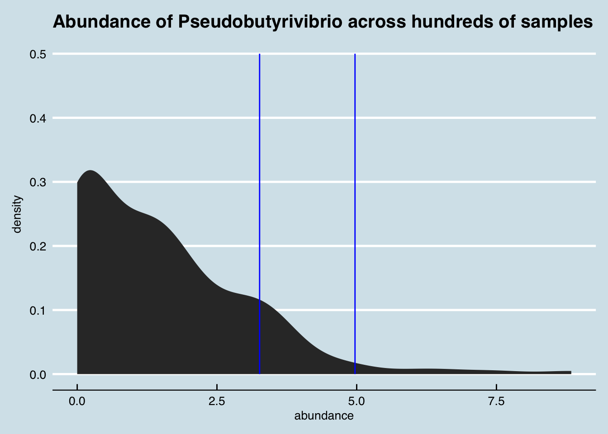
Let’s plot it to see if we can spot something unusual:
## Square root transformation
## Wisconsin double standardization
## Run 0 stress 0.1709337
## Run 1 stress 0.1810142
## Run 2 stress 0.1699966
## ... New best solution
## ... Procrustes: rmse 0.01348834 max resid 0.08355386
## Run 3 stress 0.1734943
## Run 4 stress 0.1695455
## ... New best solution
## ... Procrustes: rmse 0.008360698 max resid 0.07737699
## Run 5 stress 0.1864856
## Run 6 stress 0.1877732
## Run 7 stress 0.1694439
## ... New best solution
## ... Procrustes: rmse 0.009966784 max resid 0.07766928
## Run 8 stress 0.1691087
## ... New best solution
## ... Procrustes: rmse 0.01332048 max resid 0.1093407
## Run 9 stress 0.1731558
## Run 10 stress 0.1734274
## Run 11 stress 0.1697684
## Run 12 stress 0.1720564
## Run 13 stress 0.174068
## Run 14 stress 0.1723627
## Run 15 stress 0.171105
## Run 16 stress 0.1847247
## Run 17 stress 0.1713756
## Run 18 stress 0.1697485
## Run 19 stress 0.1689757
## ... New best solution
## ... Procrustes: rmse 0.01003923 max resid 0.107204
## Run 20 stress 0.1715495
## *** No convergence -- monoMDS stopping criteria:
## 4: no. of iterations >= maxit
## 16: stress ratio > sratmax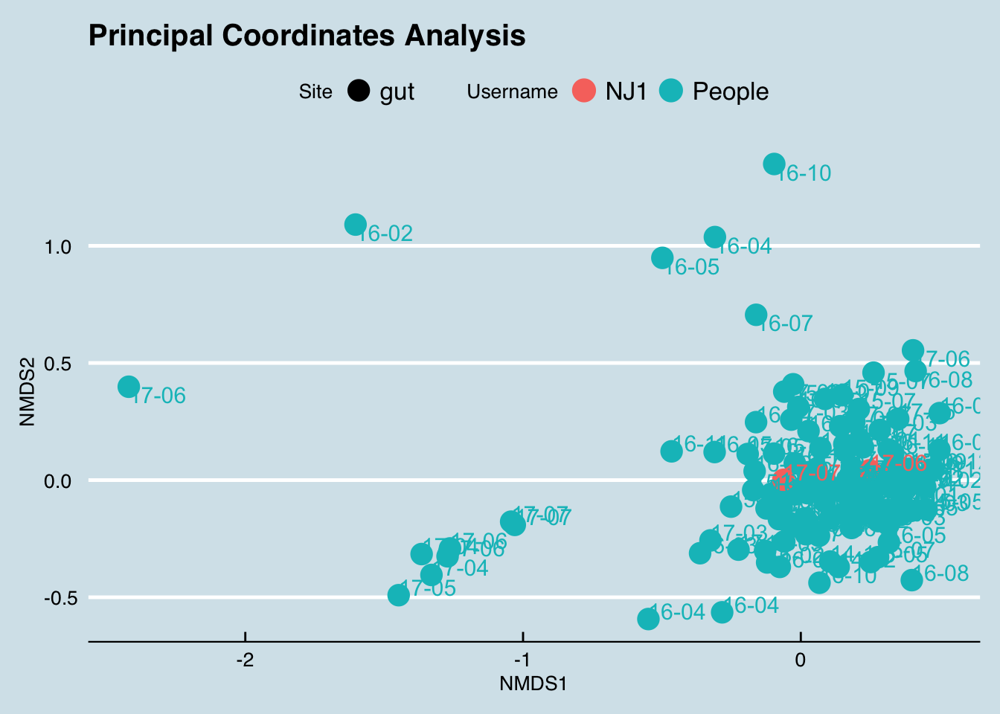
Clearly different at nearly all taxa. Which microbe disappeared in the second sample?
## 2017-07-25 tax_name
## Thalassospira 52992 Thalassospira
## Megasphaera 48939 Megasphaera
## Parasutterella 26765 Parasutterella
## Streptococcus 20459 Streptococcus
## Lactobacillus 10334 Lactobacillus
## Dialister 7481 Dialister
## Barnesiella 6917 Barnesiella
## Bilophila 5705 Bilophila
## Odoribacter 3783 Odoribacterand vice versa:
| % Unique to first sample | |
|---|---|
| Butyrivibrio | 8.42 |
| Sarcina | 2.54 |
| Dorea | 2.34 |
| Erysipelatoclostridium | 1.15 |
| Akkermansia | 1.03 |
| Flavonifractor | 0.73 |
| Oscillibacter | 0.67 |
| Lachnospira | 0.57 |
| Methanobrevibacter | 0.56 |
Let’s look at another case: “Ed” is a German man on a mostly vegetarian diet.
## 2017-05-21 2017-05-21
## Firmicutes 55.5455 48.8869
## Bacteroidetes 28.4884 41.6446
## Proteobacteria 8.7142 2.5150
## Actinobacteria 6.9858 6.8600
## Verrucomicrobia 0.2245 0.0691
## Lentisphaerae 0.0265 0.0242
## Fibrobacteres 0.0147 0.0000## 2017-05-21 2017-05-21
## Bacteroides 22.3166 34.4732
## Faecalibacterium 15.3337 1.3630
## Blautia 9.6035 12.2878
## Roseburia 6.6342 11.5717
## Sutterella 4.3859 0.1504
## Bifidobacterium 4.2248 3.2795
## Thalassospira 4.1717 2.3195
## Subdoligranulum 3.6738 1.4650
## Fusicatenibacter 2.7225 2.7554
## Pseudobutyrivibrio 2.6708 2.6257
## Collinsella 2.4773 3.3089
## Anaerostipes 1.7357 3.7396
## Parabacteroides 1.4846 3.3885
## Clostridium 1.4388 1.1312
## Lachnospira 1.3989 1.1796
## Alistipes 1.2866 1.5826
## Sarcina 1.2630 1.1762
## Erysipelatoclostridium 1.0813 1.3958
## Dorea 1.0030 1.4304
## Intestinibacter 0.8036 0.3286
## Anaerotruncus 0.5347 0.6711
## Butyricimonas 0.4091 0.2836
## Dialister 0.3678 0.5535
## Streptococcus 0.2511 0.3666
## Odoribacter 0.2038 0.2992## Square root transformation
## Wisconsin double standardization
## Run 0 stress 0.1682894
## Run 1 stress 0.1716334
## Run 2 stress 0.1674639
## ... New best solution
## ... Procrustes: rmse 0.01456304 max resid 0.3493226
## Run 3 stress 0.1685802
## Run 4 stress 0.1675674
## ... Procrustes: rmse 0.006717478 max resid 0.1268123
## Run 5 stress 0.1680028
## Run 6 stress 0.1709329
## Run 7 stress 0.166515
## ... New best solution
## ... Procrustes: rmse 0.01322074 max resid 0.3545345
## Run 8 stress 0.1676748
## Run 9 stress 0.1701792
## Run 10 stress 0.1702207
## Run 11 stress 0.1689601
## Run 12 stress 0.1676721
## Run 13 stress 0.1663148
## ... New best solution
## ... Procrustes: rmse 0.005813072 max resid 0.08307808
## Run 14 stress 0.1667465
## ... Procrustes: rmse 0.004765095 max resid 0.1008947
## Run 15 stress 0.1684929
## Run 16 stress 0.1748209
## Run 17 stress 0.1686155
## Run 18 stress 0.167307
## Run 19 stress 0.1681048
## Run 20 stress 0.1688301
## *** No convergence -- monoMDS stopping criteria:
## 18: no. of iterations >= maxit
## 2: stress ratio > sratmax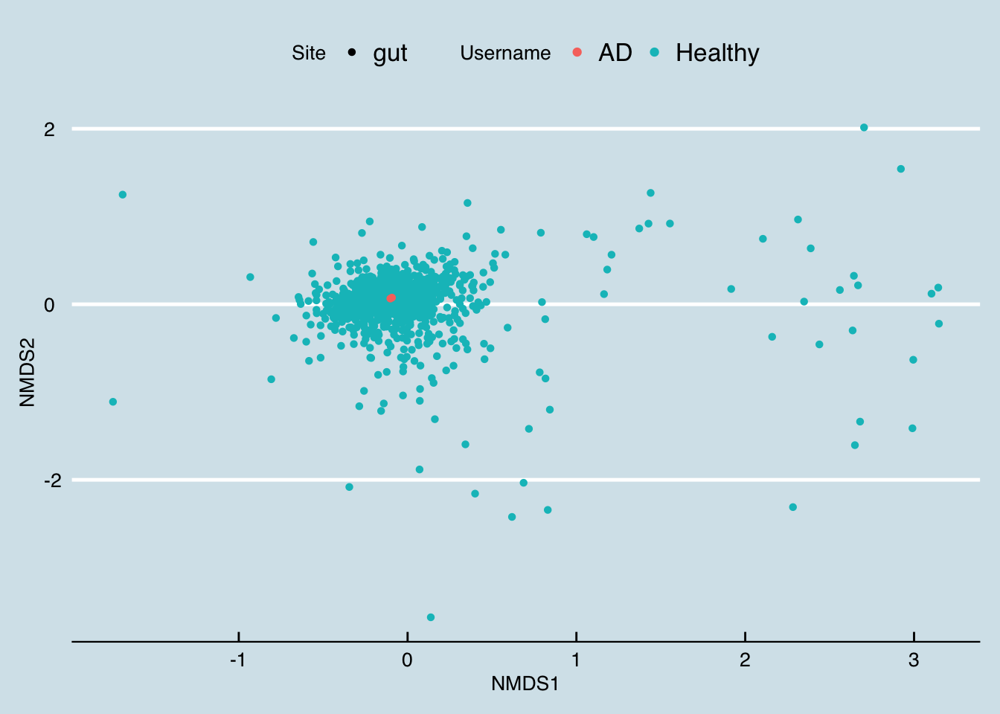
References
Garrett, W. S. 2015. “Cancer and the Microbiota.” Science 348 (6230): 80–86. doi:10.1126/science.aaa4972.
It takes up to 500 calories per day for a mother to produce enough breastmilk to feed a child (pregnancy takes only an extra 300), so nature is apparently very serious about getting this right.↩
Bjerke, G A, R Wilson, O Storrø, T Øyen, R Johnsen, and K Rudi. 2011. “Mother-to-Child Transmission of and Multiple-Strain Colonization by Bacteroides Fragilis in a Cohort of Mothers and Their Children.” Applied and Environmental Microbiology 77 (23): 8318–24. doi:10.1128/AEM.05293-11.↩
de Weerth, C., S. Fuentes, P. Puylaert, and W. M. de Vos. 2013. “Intestinal Microbiota of Infants With Colic: Development and Specific Signatures.” PEDIATRICS 131 (2): e550–58. doi:10.1542/peds.2012-1449.↩